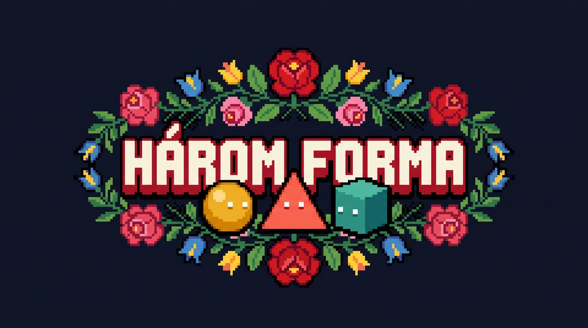

Gyors és gurul, lejtőn magától is. Felugrik a kockára, a háromszögön nekifutásból felszalad és elrugaszkodik. Egyedül ő fér be a szűk résekbe.
Élő rámpa: a gömb felfut rajta, a csúcsáról nagyot pattan. A tüskés lyukba befordul, és híd lesz. E roham: áttöri a repedt falat.
Nehéz: mindenkit eltol, őt senki. A lövedék elakad benne, csak ő nyomja le a lila kapcsolót. E bástya: toronnyá nő.